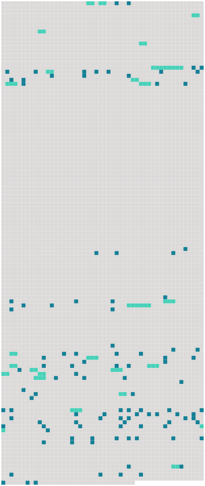

Longueur nb maillons : 133 mentions |
|
» Pour [elle] , pour [la] voir riche et heureuse, j'étais prêt à aller jusqu'au crime …… [4 phrases] Avant de s'en aller mourir là-bas, il avait voulu me confier sa fille, qui avait l'âge de [la mienne] , six ans. [8 phrases]
Et sa fortune serait à [ma fille] … [7 phrases] Ensuite, je décidai de me cacher avec [ma fille] dans cette ville, où personne ne pouvait avoir l'idée de venir me chercher, sous le faux nom que j'avais pris. [17 phrases] Bientôt un pas léger se fit entendre dans le corridor, la porte de la chambre mortuaire s'ouvrit et [une jeune fille d'une vingtaine d'années] parut. [C'] était [Marcelle] [Elle] se précipita sur la dépouille de [son] père et [se mit] à gémir comme une enfant : « [Mon] père, [mon] père, [mon] bon père!! … » Se tournant brusquement vers le prêtre, [elle] lui dit suppliante : « Oh!! dites [-moi] , vous, qu'il n'est pas mort!!
» [Marcelle] comprenant enfin que tout espoir était perdu, se livra à une crise de désespoir farouche, qui finit par [la] terrasser.
[Elle] tomba inanimée sur le parquet. [1 phrases] — « [Mlle Marcelle] a besoin de vos soins, » dit simplement le médecin, sans plus s'occuper de [la jeune fille] [Il] ajouta : « M. Richard est mort.
» [84 phrases] [Marcelle] , la fille de M. Richard, pleura silencieusement en l'apercevant, car il devait, quelques heures plus tard, procéder aux funérailles de [son] père.
Le prêtre [lui] parla doucement de la résignation à la volonté de Dieu. En quittant [Marcelle] , on se dirigea vers une demeure un peu éloignée des autres. [26 phrases] [Marcelle] semblait inconsolable, ou, comme la fille de Rachel, [elle] ne voulait pas être consolée. Un seul habitant de Némoville avait accès auprès d' [elle] : le docteur Desmarais. On prétendait que [Marcelle] et le médecin étaient fiancés, mais les mieux renseignés disaient que [la jeune fille] semblait plutôt craindre qu'aimer le médecin.
Depuis la mort de [son] père, on eût dit qu' [elle] subissait l'influence de ce personnage, qui n'était guère sympathique ; quelqu'un avait même insinué que [la fille de M. Richard] éprouvait un sentiment plus doux pour le gouverneur, parce que, certains jours, [elle] avait rougi de plaisir en l'apercevant. Mais, tout cela n'était que des on-dit, et Roger ne semblait avoir pour [Marcelle] que la courtoisie ordinaire chez un homme bien élevé. [18 phrases]
On se hâta de transporter la naufragée à Némoville, et on accosta à la résidence de [Marcelle] , où le prêtre suggéra de laisser la malade. [1 phrases] La naufragée reprit bientôt ses sens, et comme on ne pouvait pas convenablement l'installer dans le « Nautilus », Roger demanda à [Marcelle] de la garder auprès d' [elle] , ce que [celle -ci] accepta avec empressement. Ce fut en rougissant de plaisir que [Marcelle] répondit qu' [elle] était heureuse de lui rendre ce service ; et [elle] disait la vérité, car [elle] pensait bien que le gouverneur ne manquerait pas de s'intéresser à celle qu'il avait sauvée de la mort, et lorsqu'il viendrait [elle] aurait l'occasion de le voir.
La bonté de [la jeune fille] perdait sans doute un peu de son mérite par cette pensée intéressée, mais qui saurait [la] blâmer, connaissant le sentiment qu' [elle] avait au cœur.
L'étrangère fut déposée sur un lit et abandonnée aux soins de la vieille servante, tandis que [Marcelle] retournait dans le salon, où Roger attendait le verdict du médecin pour prendre congé. Il demanda à [Marcelle] la permission de revenir s'informer de la malade : « [Mademoiselle Marcelle] , dit -il, me permettez [-vous] de revenir prendre des nouvelles de [votre] protégée??
»
[Pauvre Marcelle] ! Roger, inconscient de l'émotion qu'il venait de causer, attendait la réponse, que [la jeune fille] articula d'une voix tremblante.
Et Paul, qui était présent, fut seul à deviner le secret de [l'orpheline] Il murmura tout bas : « [Pauvre fille] !! [2 phrases]
[Marcelle] et Gaétane formaient un étrange contraste de beauté, et ce soir -là, en les voyant toutes deux dans le petit salon du sous-marin, il eût été difficile de dire laquelle était la plus belle, de [la blonde Marcelle] , avec [sa] profusion de cheveux d'or et [son] teint de lys et de rose, que trouaient [ses] grands yeux bleus ; ou de la brune Gaétane aux cheveux noirs, encadrant son visage régulier, très pâle, et que semblaient éclairer ses yeux bruns profonds. [1 phrases] — « [Vos] reproches me font bien mal, disait la voix douce et chantante de l'étrangère, mais tout en éprouvant une grande reconnaissance pour celui qui m'a sauvé la vie, je ne puis me défendre d'un réel malaise, lorsqu'il me regarde ou m'adresse la parole. Je ne le hais pas, ainsi que [vous] le dites, ce serait une ingratitude dont je suis incapable, mais il me fait peur, réellement peur. [2 phrases]
»
Pour se mentir à [elle -même] , [Marcelle] se disait que le médecin lui avait vraiment sauvé la vie, puisqu'elle n'avait que le souffle, quand le gouverneur la [lui] avait confiée. [3 phrases]
» Ils parlèrent longuement ensemble, et le médecin dit en quittant [la jeune fille] : « N'oubliez pas que tout dépend de [vous] , [Marcelle] ; je [vous] promets qu'avant trois mois, [vous] serez la femme du gouverneur, si [vous] suivez mes conseils ; et moi j'épouserai la fille du capitaine Laurent. En servant mes intérêts [vous] servez aussi les vôtres.
» [Elle] avait à peine repris [sa] place auprès de Gaétane, lorsque la vieille servante entra, apportant sur un plateau, la carte du gouverneur.
[Marcelle] rougit si violemment que [sa] compagne [l'] en plaisanta. — « C'est le gouverneur de Némoville, dit [Marcelle] , [qui] demande à être reçu ; il vint souvent », ajouta-t [-elle] , en baissant les yeux, comme si [elle] eût eu peur que Gaétane y pût lire le mensonge qu' [elle] faisait, en assurant que le gouverneur venait souvent chez [elle] « Celui -là, ajouta-t [-elle] , [j'] espère que vous l'aimerez …… à cause de [moi]
»
»
[Elle] présenta Gaétane, que le jeune homme sembla chercher des yeux, dès qu'il eut franchi le seuil du salon, et tous trois s'assirent et passèrent ensemble une heure de gaie causerie. [3 phrases] non, répliqua-t -elle, on est si bien ici, je me sens si en sûreté auprès de [Marcelle] ……
»
»
Il [l'] avait écoutée en regardant [sa] compagne. [14 phrases]
D'un autre côté, ce n'était plus un secret dans Némoville que le docteur Desmarais était très assidu auprès de la belle étrangère ; on le voyait souvent se diriger vers la demeure de [Marcelle] , mais on savait que ce n'était plus à [Mlle Richard] [qu'] il pensait. [1 phrases]
Comme elle faisait un mouvement pour se lever et se soustraire aux protestations du médecin, la porte du salon s'ouvrit et [Marcelle] entra accompagné de Roger, qui resta interdit devant le groupe romanesque que présentait Gaétane et le médecin. — « [Je] vais vous recevoir dans [mon] boudoir, avait dit [Marcelle] en riant, ce serait trop dommage de déranger un si doux tête-à-tête. [1 phrases]
Il n'avait plus reparu chez [Marcelle] , depuis. Quant à [Marcelle] , [elle] paraissait de plus en plus sous la domination du docteur Desmarais ; et celui -ci semblait plus actif et plus sournois que jamais. |
 |
Il est possible de télécharger la ressource sur la page Ortolang |
Si vous avez des questions ou vous voyez des erreurs, merci d'envoyer un mail à silvia.federzoni89@gmail.com |